- Role
- UX Researcher & Designer
- Focus
- WCAG 2.2 accessibility audit
- Timeline
- 2021
- Platform
- Mobile app · Uber
Overview
Today, more than ever, usability is essential for making interfaces accessible to everyone. As humans, we each have unique needs, and technology should reflect that. With this in mind, a research study was conducted to evaluate the Uber app's compliance with WCAG standards.
The current Uber app was analyzed, identifying its strengths and weaknesses, and exploring ways to make it more appealing and accessible for senior users.
Findings
Bad legibility. Unclear actions. Arrival times that aren't clear. No obvious way to change a payment method. Small frictions that add up for any rider, and add up faster for a senior one.
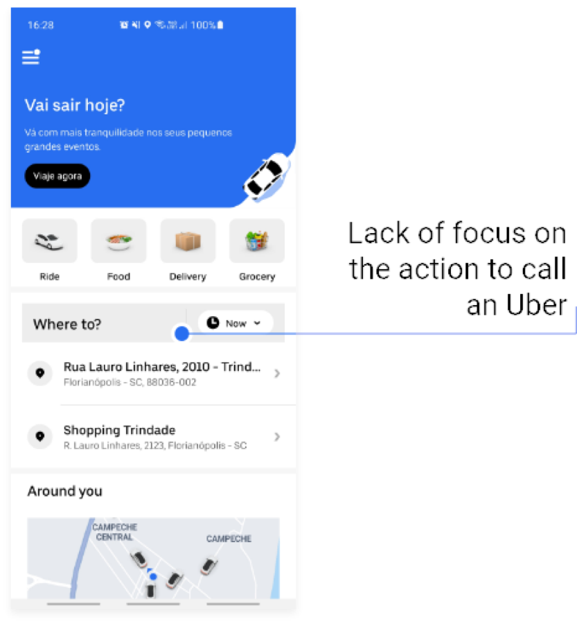
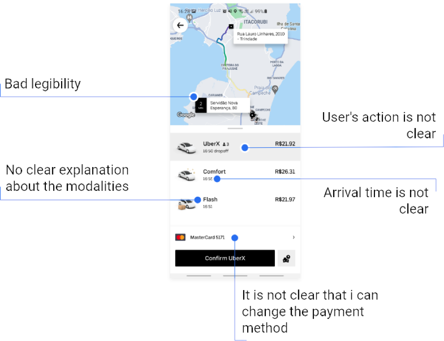
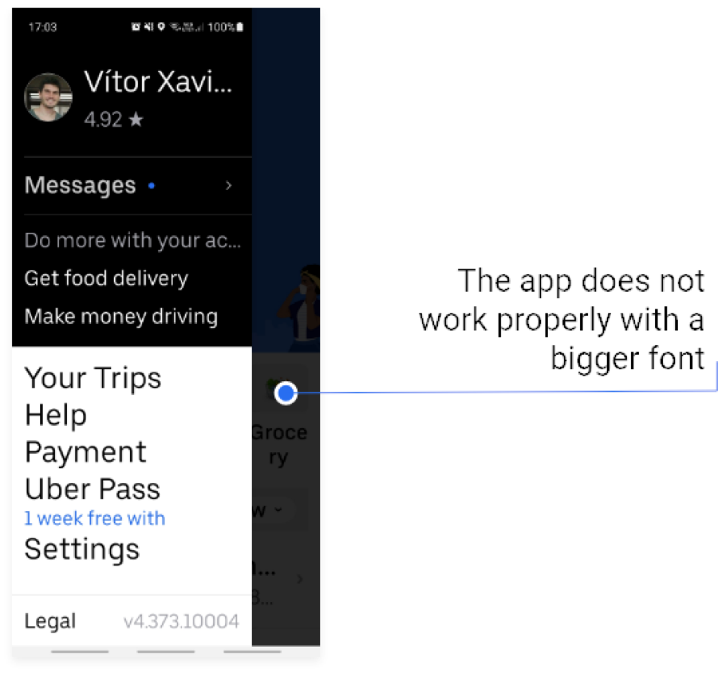
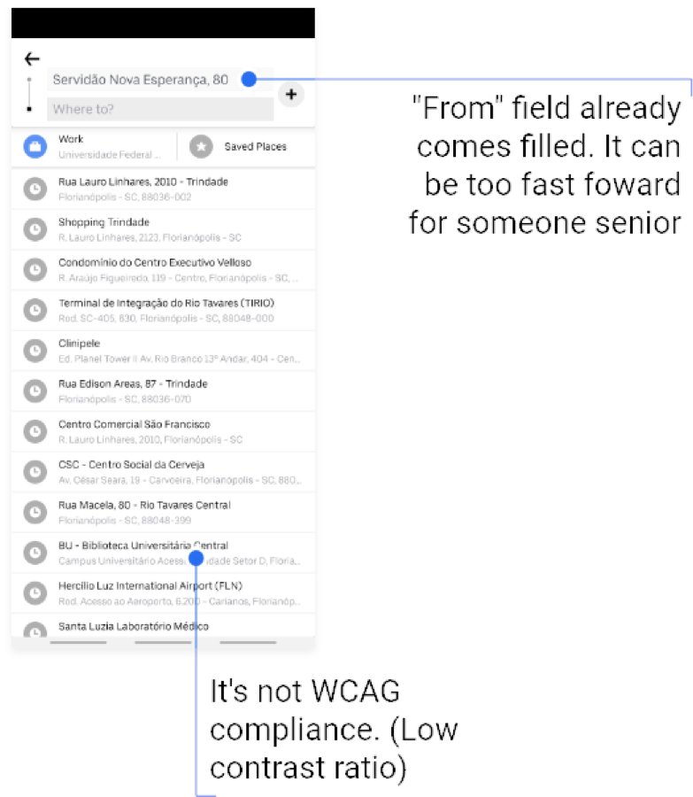
Lack of focus on the action to call a ride.
The primary action sits below a promotional banner and four category tiles, so the thing most riders opened the app to do is the hardest thing to find.
Bad legibility, and actions that aren’t clear.
Map labels are hard to read, the ride tiers carry no explanation of what separates them, the arrival time is ambiguous, and nothing signals that the payment method can be changed.
The app doesn’t work properly with a bigger font.
At the system font sizes a senior user is most likely to have set, labels truncate mid-word and the panel collides with the content behind it.
The “from” field arrives already filled in.
Pre-filling the origin moves faster than a senior rider expects, and the list below it falls under the contrast ratio WCAG asks for.
What WCAG is
WCAG (Web Content Accessibility Guidelines) is a set of international standards created by the W3C to make digital content more accessible to people with disabilities. It provides guidance on how to design websites and apps that are usable by everyone, including users with visual, auditory, motor, or cognitive impairments. In this particular research, the primary focus was on senior users.
Guidelines applied
- 1.4.3
Contrast (minimum)
Text and interactive elements were checked against WCAG's minimum contrast ratio, so content stays legible for users with low vision.
- 1.3.5
Identify input purpose
Form fields were labeled so their purpose can be determined programmatically, helping autofill and assistive technology do their job.
- 2.4.6
Headings & labels
Headings and labels describe topic or purpose clearly, so screen reader users can navigate without guessing.
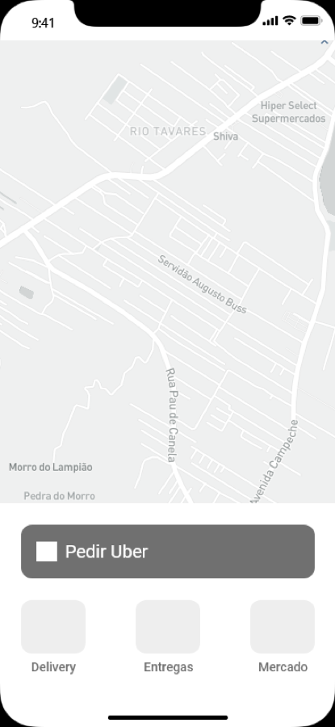
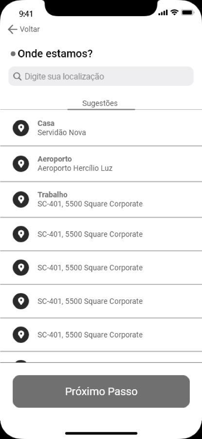
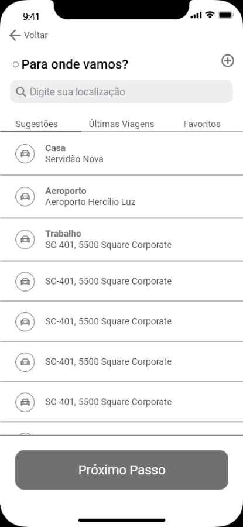
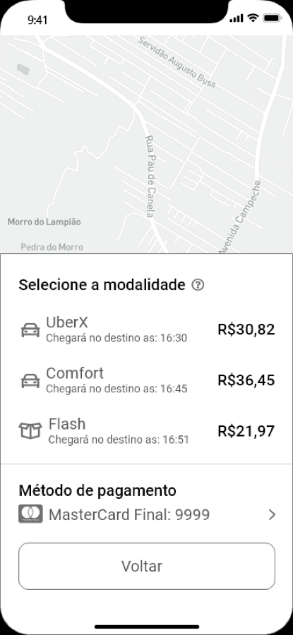
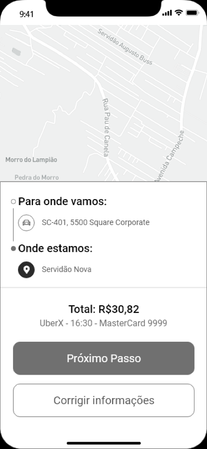
Proposal
Bigger touch targets, clearer primary actions, larger type. The redesigned interface carries those changes through to a screen that is ready to ship, across the request flow, the origin and destination pickers, and ride confirmation.
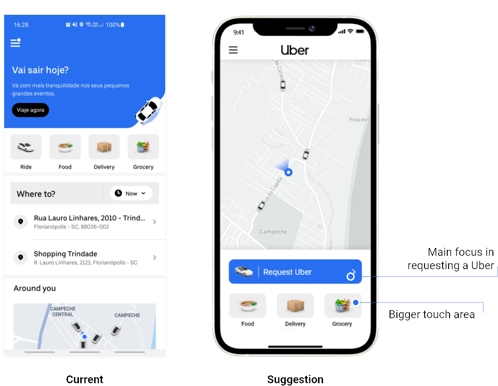
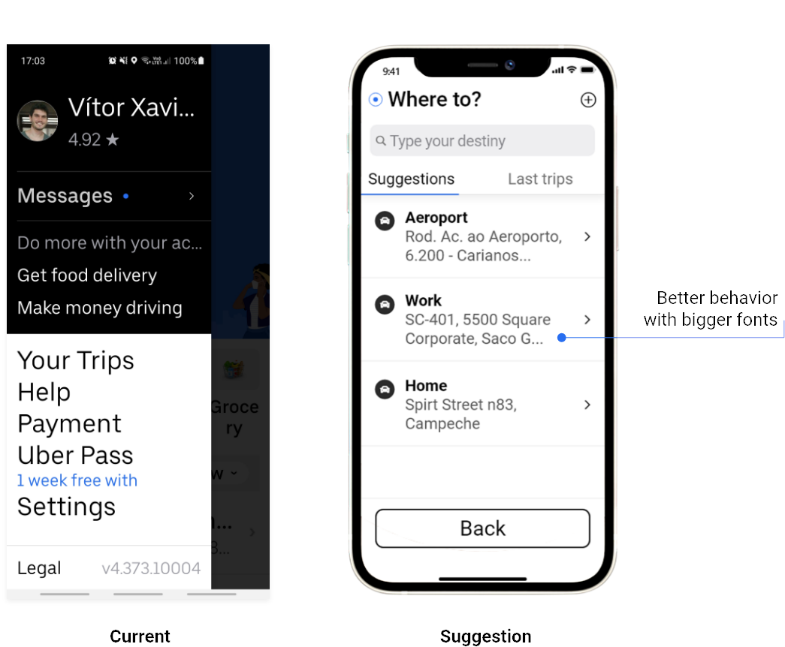
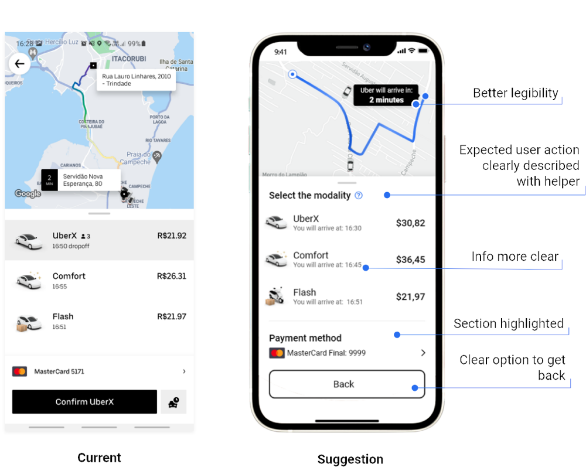
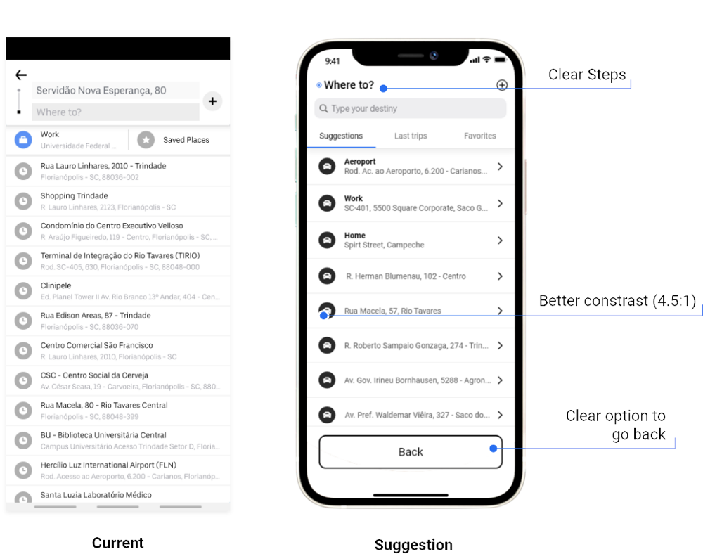
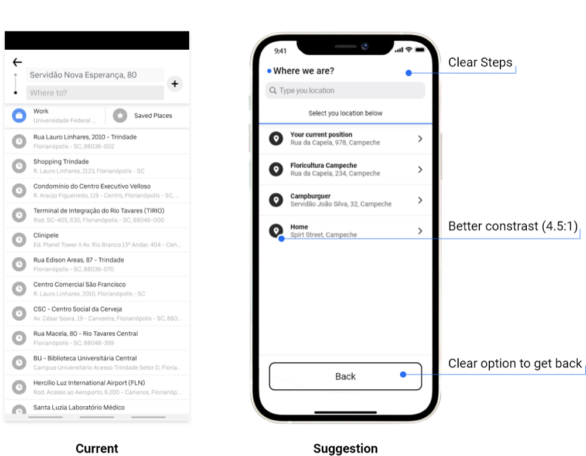
One primary action, and a bigger target.
Requesting a ride becomes the largest thing on the screen, and the remaining services drop to secondary tiles with more room to hit.
Behaves properly at a bigger font.
Labels wrap instead of truncating, so the screen still works at the system font sizes a senior rider is most likely to have set.
Better legibility, and the action spelled out.
Arrival is stated in plain words with a helper beside it, prices and times sit clear of one another, the payment method is given its own section, and there is an obvious way back.
Contrast raised to 4.5:1.
The results list meets the minimum contrast ratio, the step names itself at the top, and going back is a visible option rather than a guess.
The step names itself, and nothing arrives pre-filled.
“Where we are?” asks the question outright and the rider chooses from the list, at the same 4.5:1 contrast, with the way back always in view.
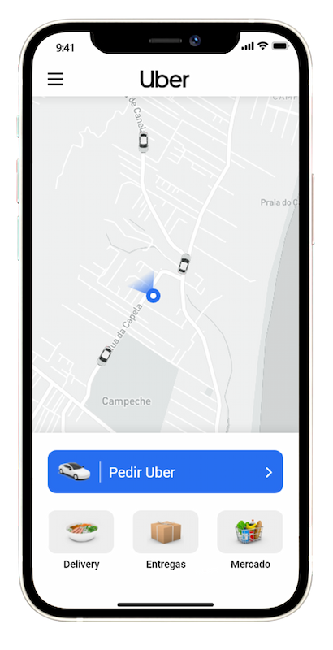
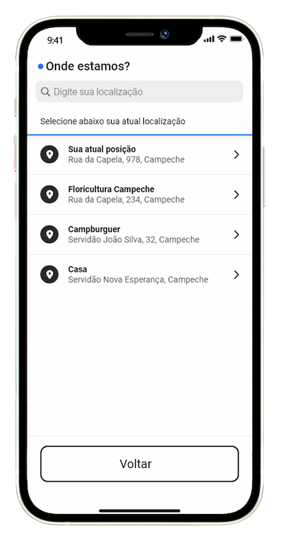
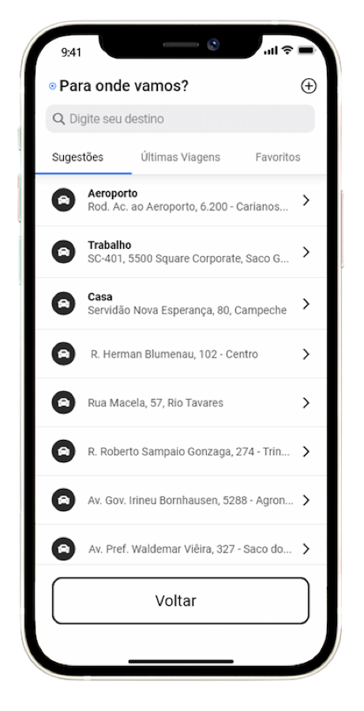
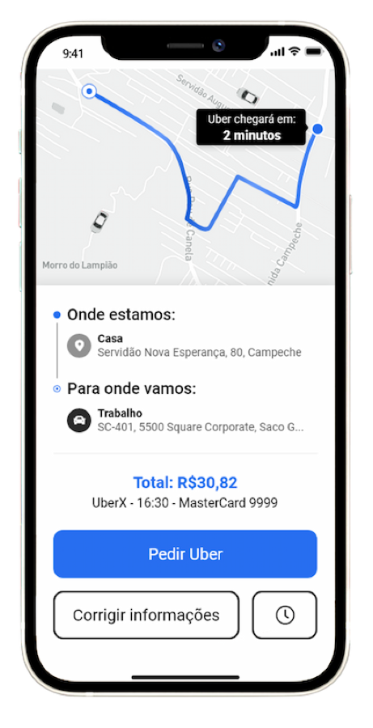
Have a product worth skyrocketing?
I'm open to new opportunities and looking to join a team where I can bring a decade of product design and make a meaningful impact. If you're hiring, I'd love to hear about what you're building.